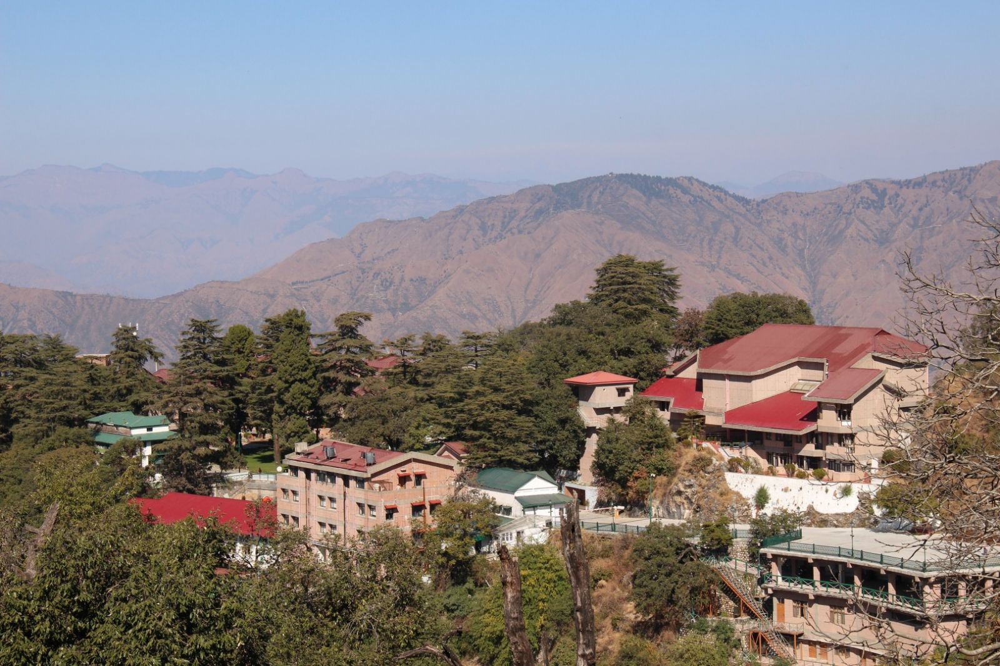

|
|||
LBSNAA
UPSC ACADEMY
 The Lal Bahadur Shastri National Academy of Administration (LBSNAA) is a research and training institute on public policy and public administration in India. Operated by India's Union Government, LBSNAA is located in the remote town of Mussoorie, Uttarakhand in the foothills of the Himalayas. Dr. Sanjeev Chopra serves as the current Director of this premier institute.
The academy's main purpose is to train civil service officers of Indian Administrative Service Indian Forest Service; and also for Group-A Central Services such as Indian Foreign Service among others. After completion of training, the trainee officers will be awarded an MA degree in Public Management from Jawaharlal Nehru University, Delhi.
...
This building was constructed to meet the requirement of additional class room space for conducting Mid Career Training Programmes. It was completed in 2010. The top level V with six guest rooms is reserved for senior executives/ eminent visiting faculty. Level IV houses a dining hall, lounge and six breakout rooms. On level III there are the faculty rooms and one seminar room for 75 persons. Level II has the Nehru Auditorium along with the twelve seminar rooms with a combined seating capacity of around 550 while the Mess can cater to 130 participants at a time. Level I and the basement houses various sections and stores of the Academy. A.N. Jha Plaza, named after first Director of the Academy, caters tea/coffee and snacks. A lush green lawn has been developed in this Plaza over a rain water harvesting tank of 2.80 lakh litre water capacity. With faculty rooms for administration/ training/ estate sections, lecture theatres and seminar rooms located here, Gyanshila today is the hub of several activities in the Academy.
Inaugurated by the then Vice President, Shri K.R. Narayanan on 3rd November, 1992, the site formerly housed the Officers’ Mess, lounges and library which were destroyed in the fire of 1984. Karamshila today houses 1 Lecture Hall (GBPH- Govind Ballabh Pant Hall), 1 Conference Hall (Karamshila Conference Hall), 2 Seminar Rooms (SR- A, SR-B), Officers’ Mess, Gandhi Smriti Library and separate lounge for Executives and Officer Trainees.
This is one of the oldest buildings of the Academy and was renovated and upgraded during the years 2015-17. It has one big hall that can be converted into three separate halls by removable partitions as per requirement. The Faculty comprises of chosen practitioners from across the Civil Services in India with distinctive professional accomplishments; leading academics and eminent visitors. They are scholar-practitioners with the responsibility of assessing training needs, design curriculum, identify and deliver programmes. The Academy is unique in its ability to draw specialists from the non-government and private sectors. Additionally, there are those who come from leading global institutions to supplement the efforts of the in-house Faculty. This makes it a hub for learning and exchange of ideas from within and outside the Government.With a total seating capacity of 30 persons in each hall, it is presently used as smaller break-out rooms for conducting ice-breaking sessions as also for language and other sessions that require closer interaction among participants.
The old G.B. Pant Block was rebuilt as Dhruvshila. Prior to Gyanshila, Dhruvshila served as the main administrative block after the fire accident of 1984 and earthquake of 1991. Today, it houses office chambers of faculty members along with Training Induction Section. Language faculty members and Office of Rajbhasha were later shifted to this building during the renovation and restoration of Charleville building. It was formally inaugurated on 9th August, 1996 by the then Minister of State, Personnel, Pensions, Public Grievance and Parliamentary Affairs, Shri S.R. Balasubramanyam.The Indira Bhawan campus workshops and seminars.